SAGANO BLOG
- >
- SAGANO BLOG
- >
- すべて(時系列)
2024年04月07日
4月7日(日)に梅小路公園で開催された循環フェスというイベントに、コーヒーかすの再利用プロジェクトに取り組んだ3年生4名のグループが参加し、自分たちで考案・製作したコーヒーかす製スモークチップの販売を行いました。
パッケージやポスター、店の装飾などを工夫したり、買っていただいた方向けの使い方説明書を用意したり、スモークの実演とスモークしたお菓子の試食を取り入れたり、２月に参加が決まって以来、実際の販売に向けて様々な準備を重ねてきました。
それでも最初は緊張してしまって売り込みの声のかけ方にも自信がなく、開始当初はなかなか売れない苦しい時間を過ごしましたが、徐々に商品の説明にも慣れてきて、しっかりと商品の面白さをアピールすることができるようになり、用意した商品はイベント終了時刻の1時間ほど前に完売することができました。「売上高－原価・諸経費」はわずかながら黒字になり、その利益分については循環フェスの運営事務局に寄付させていただきました。
実際に販売を行う難しさと面白さを体感する貴重な経験を積めたのはもちろん、販売の空き時間で他ブースに参加したり、運営の方にイベントで出た生ごみ類を堆肥化するプロジェクトを紹介してもらったりして、「循環」の大切さを実感しました。
さらに、イベントを取材されていた京都新聞社さまからインタビューを受けたり、２月の高校生ビジネスプラングランプリの発表会でアドバイスをいただいた学生起業家の方と再会したりと、学校の外に出て生徒たちの世界がさらに広がった１日になりました。
ここに至るまで、ビジネスプランそのものに関わるアドバイスや、このイベントを紹介していただいたり、移動販売車を無償でレンタルさせていただいたり、当日に様子を見に来ていただいたりと、多くの方の支援のおかげで、ビジネスプランを実際の商品化を試す段階まで進めることができました。
このメンバーでの活動はひと区切りとなりますが、新年度、新しいメンバーでアカデミックラボの活動が始まります。嵯峨野高校生の活躍の場がまたさらに広がってくれることが楽しみです。
2024年04月01日

嵯峨野高校のしだれ桜は少しピンク色が濃く、艶やかな色です。デザイン工芸部では、この桜の美しさに負けぬ「ゆかた」作るべく、いまだ無地の反物と部長が格闘しております。

春休み中には、なんとか下図を反物に写すところまで進むつもりです。･･･が、その柄の場所が難しいのです。御協力いただいている「和衣庵」さまにお尋ねすると、着物には華やかな柄を入れる、おおよその場所が決まっているそうです。
着衣した状態で、右肩から胸・左袖の外面と左肩から背中・右袖の内面が大事だそうで、振り袖や格式のある着物はだいたいこの型になっているとのこと。ここに柄があると、日本文化の所作をするとき、美しく見えるそうです。「三味線を弾くポーズをして見える場所」と覚えるとよいとのこと。
･･･たしかに、日本美人の代表「見返り美人図」は左肩から背中を手前に見せて振り返っていますね。さすが菱川師宣先生。
色々と教えていただき、楽しく日本文化を学びながらゆかたの制作に励む部長なのでした。

2024年04月01日

いよいよ桜が咲きました！！
春の陽射しを待ちわびていたのは、生徒の皆さんも同じようです。
嵯峨野高校では、テニス部の日焼けの度合いでも季節の移ろいがわかります。
普段は優しくおっとりとした生徒の顔が、部活ではキリッと変わります。
この集中力、頼もしい限りです。


格技場では卓球部と剣道部が活動していました。
張り詰めた緊張感。どちらも一瞬を競う競技ですね。


中庭では桜の開花に急かされるように、ダンス同好会が熱心に活動しています。
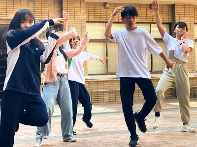 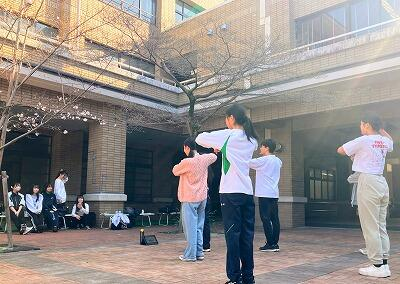
大会でもあるのかな？話を聞いてみると...
「新入生歓迎会のために練習しています」とのこと。
どうやら生徒のみなさんは、桜ではなく新入生を待っているようす。
新学期に向けて、先輩としての準備があるのですね。
4月1日、生徒の成長とともに、春の陽射しが眩しく見える本年度の始まりでした。
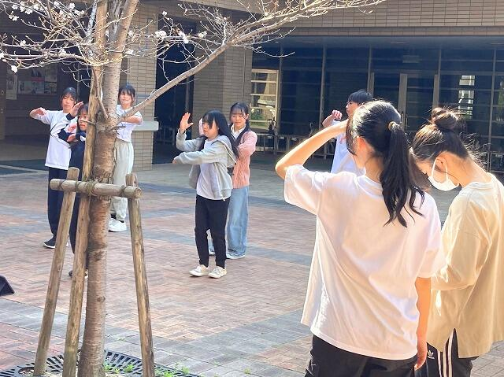
2024年03月31日
軽音楽部２年生のバンド「ハロー二世帯住宅」が、３月20日に実施された第３回Kyoto Spring Contestにおいて「審査員特別賞」をいただき、京都府代表として８月に和歌山で行われる近畿高等学校軽音楽フェスティバルに出場することになりました。
また、３月28日に実施された第７回高等学校軽音楽コンテスト近畿北陸大会では、近畿・北陸の強豪校が集まる中、宇治市長賞を受賞しました。
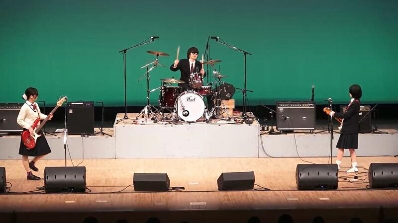
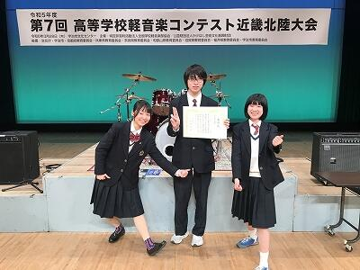
賞をいただくことも嬉しいことですが、最近ファンが増えていて他校の先生や生徒からも声をかけられることがオリジナル曲を作っている彼らにとって何より励みになっています。
ハロー二世帯住宅の曲はYouTubeで視聴できます。ぜひご覧ください。
2024年03月31日
２年生アカデミックラボ「スポーツと環境ラボ」で取り組んだことについて報告します。
今年度は５つのグループに分かれて活動しました。
グループ１
遊びを通して幼児の投げる能力を向上させることをテーマに活動しました。
近隣の幼稚園の協力を得て実際に子どもたちに的当て遊びに挑戦してもらいました。
実施期間が短いこともあって能力の向上が目に見える形にはなりませんでしたが、的当て遊びに熱中する子供たちの姿を見ることができました。
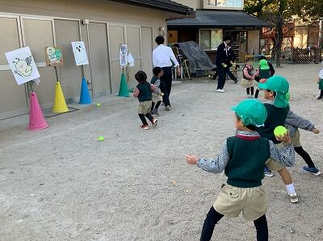
グループ２
サッカーチームのソーシャルメディアの投稿内容について分類、比較を行いました。
ファンを増やすために、どのような発信が効果的か考察することができました。
グループ３
障害者スポーツをテーマに活動を進め、自分たちで新しいアダプテッドスポーツを考案しました。
12月には障害者スポーツセンターで体験会を実施し、様々なご意見をいただくことができました。
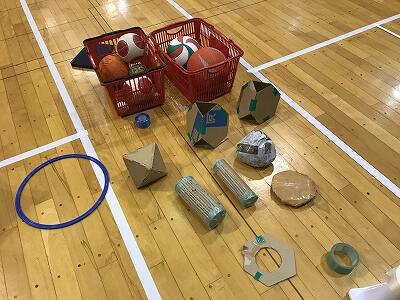
グループ４
高齢者施設の方々にeスポーツを体験してもらい、認知機能の向上を目指しました。
eスポーツを高齢者の方に楽しんでもらうための工夫について、日本アクティビティ協会からご指導いただき、「健康ゲーム指導士」の資格をいただきました。
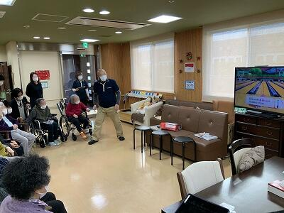
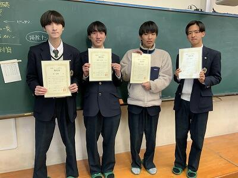
グループ５
NPO法人京都発竹流域ネットにご協力いただき、竹で「モルック」を作りました。
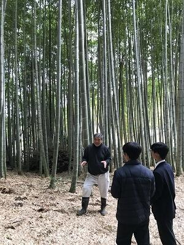
また、実際に京都モルックの会の体験会で使っていただき、竹ならではの良さや改善点などをご意見をいただきました。
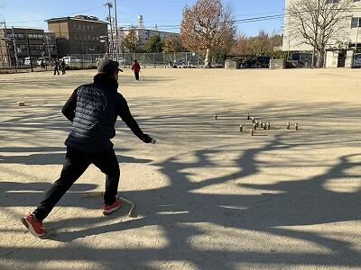
そして今年度の成果について、マイプロジェクトアワード2023で発表し、地域summit特別賞を受賞しました。
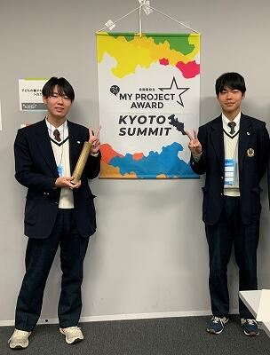

18名で１年間楽しく活動できました。
活動にご協力いただいた皆様、ありがとうございました！
2024年03月29日
３月24日に鯖江市で行われた第３回CyberSakura決勝ラウンドにおいて、嵯峨野高校コンピュータ部から参加したチーム「HEXAGON」が見事優勝しました。

CyberSakuraは2021年に始まったサイバーセキュリティ分野の人材育成を目的とした教育プログラムで、鯖江市・総務省・デジタル庁・警察庁・福井県警察・防衛省の後援を受けています。参加できるのは日本国内の中学生・高校生・高専生（１〜３年）で、３～４人のチームを作って参加します。競技内容は、仮想のコンピューター上で脆弱な設定や状況を改善することで獲得できるスコアをチーム対抗で競うというものです。
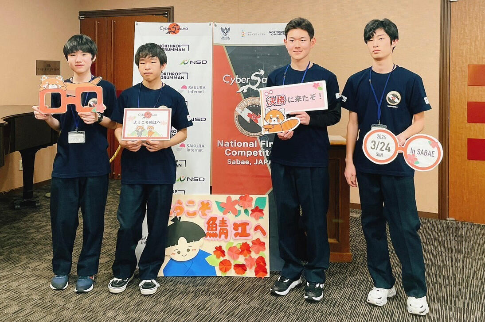
会場に到着しました
会場に到着しました
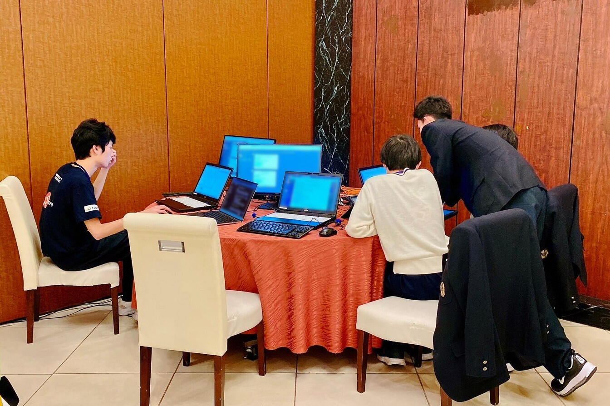
競技中の様子
競技中の様子
決勝ラウンドではWindows Serverの課題が追加された上に、Windows・Ubuntuの難易度が予選ラウンドよりも更に高くなっていました。
応援ありがとうございました！
2024年03月27日
３学期の情報Ⅰの授業では、「SDGs」をテーマにグループで探究学習に取り組みました。
まず生徒たちは自分の興味・関心について考え、それをもとにグループに分かれ、グループで１つの問いをつくりました。その後、文献調査等を進め、根拠となる事例や専門家の意見などを集めて問いに対する結論を出しました。そして、探究した内容をスライドにまとめ、グループごとに発表を行いました。
２年生ではさらに高度な探究学習に取り組むので、今回の活動がよい経験になったと思います。
以下ではクラス内での発表の様子をお届けします。スライドや話し方、発表姿勢など様々な面で工夫が見られました。
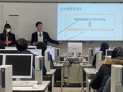 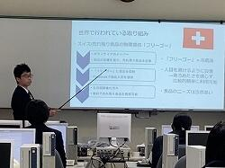 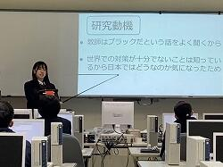
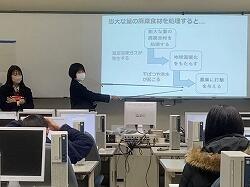 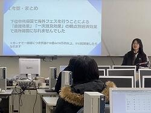 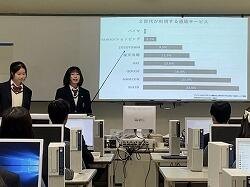
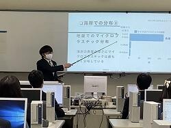 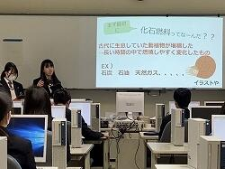 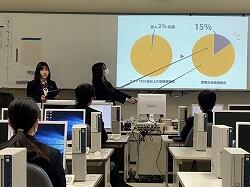
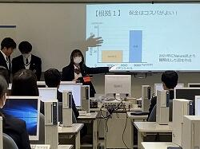 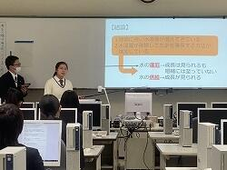 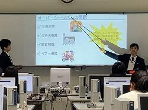


2024年03月26日
３月13日（水）の５・６時間目に「情報Ⅰ 合同発表会」を行いました。
３学期の情報Ⅰの授業では、「SDGs」をテーマにグループで探究学習に取り組み、プレゼンテーションを行いました。そして、各クラスで最も評価の高かったグループがクラス代表に選ばれ、合同発表会でプレゼンテーションを行いました。学年全員の前で発表するという機会はなかなかないので、よい経験になったのではないでしょうか。
どのクラスもさすが代表と感じるような素晴らしい発表でしたが、その中で教員の審査と生徒の皆さんの投票の結果、見事８組が最優秀賞、４組と１組が優秀賞に輝きました。おめでとうございます！
クラス内の発表でも素晴らしい発表がたくさん見られました。その様子は後日お伝えしたいと思います。
以下、合同発表会の各クラスの発表タイトルと写真を掲載します。
１組「教育現場における教員のイメージの改善」＜優秀賞＞

２組「既存のマイクロプラスチックの回収方法の検討」
３組「京都府で観光客が多くても住民が交通不便を感じない街づくりをできるのか」
４組「教育虐待」＜優秀賞＞
５組「教育～不登校への対応～」
６組「牛とメタンガスと地球温暖化の相関関係」
７組「3Rの活性化」
８組「消費者が魚を守る！？～水産エコラベルの普及と消費者の意識～」＜最優秀賞＞

2024年03月22日
3月19日に行われました第65回日本植物生理学会高校生生物研究発表会にスーパーサイエンスラボ生物ラボから18人が参加しました。全国から70テーマのポスター発表が行われ、熱気あふれる会場の中、大学の研究者、大学生、他校の先生や生徒から鋭い質問が飛び交いました。

発表の際には、聴講いただいた方に合わせて柔軟に対応できたと思います。中には研究した生物が専門の先生が見てくださり、活発な助言（生物愛談義？）も繰り広げられます。
「カイワレ大根にストレスを与えた場合のポリフェノール量の変化」を発表したチームが顧問審査員賞を受賞しました！二人には今学会の感想を書いてもらいました。
学会：第65回日本植物生理学会
参加者：藤井麗子、湯川瑞結
私たちは、第65回日本植物生理学会年会特別企画 高校生生物研究発表会に参加しました。全国各地から34校が参加し、ポスター発表や各学校のSSHの取り組みの紹介などが行われました。今回の研究発表会では、大学生や他校の先生など、たくさんの方にさまざまな観点からの意見を聞くことができ、私たちにとってとても貴重な経験となったと思います。発表後には自分たちのテーマや実験について多くの改善点や新しい実験の活用の仕方を学ぶことができました。自分たちの研究を評価していただけたことがとても嬉しかったです。この経験を通して探究活動の面白さを改めて感じられたと思います。
自らの研究を発表できたことは勿論、他校のレベルの高い研究を見て、様々な意見をもらうことで成長できた１日でした。
2024年03月22日
スーパーサイエンスラボ、アカデミックラボの生徒各５名ずつが、「第６回 高校生サイエンス研究発表会2024」（主催 第一薬科大学・日本薬科大学・横浜薬科大学）において研究発表を行いました。今回はZOOMによるオンライン発表形式で、3月12日と13日に、それぞれ以下の２件の発表を行いました。
「段差がドミノの倒れる速度に与える影響について」
「自然由来の化粧品原料を探し求めて～京野菜とキンモクセイの秘める効能～」
生徒は少し緊張しながらも、発表及び質疑応答をしっかりと行いました。
2024年03月21日
令和６年２月18日 京都府高等学校理科教育研究会連絡協議会主催の令和５年度高校生理科研究発表会が、京都市青少年科学センターにて行われました。
７校から16本の研究発表がありました。部活動や課題研究で行った研究などをプレゼンテーションし、活発に交流が行われました。
本校のSSHの取組であるスーパーサイエンスラボの地学(気象)ラボから「 逃げ水発生時の気象観測」のタイトルで発表しました。夏場の道路で見られる逃げ水と、そのときの気温分布を観測し、発生要因やメカニズムを解き明かしたいと思って研究してきました。
緊張もありましたが、自分たちの言葉で伝えることができました。この経験を活かして、今後も研究を続けていきます。
2024年03月19日

本日、体育館にて修了式が行われました。
約1年ぶりに全校生徒が体育館に集まり、校歌斉唱から始まりました。
校長先生の式辞では
ＰＤＣＡサイクルへの言及から始まりました。PDCAサイクルとはPlan（計画）、Do（実行）、Check（測定・評価）、Action（対策・改善）の仮説・検証型プロセスを循環させ、マネジメントの品質を高めようという概念です。このサイクルで重要なのは、CheckとActionの部分である。春休みのうちに、この1年、自分ができたことはなにかをしっかり意識して振り返り、4月からの新しい計画に繋げて欲しい。
さらに、阪神タイガースの矢野前監督の言葉を紹介しながら、自分が成功できると信じ切ることの大切さなどに触れ、４月から新しい目標に向けて頑張ってほしいとの言葉がありました。
生徒指導部長からは
制服の「正装」変更について経緯を添え説明がありました。そして、教育目標（安全安心・全員が主人公・感謝）について振り返りがありました。在校生の自己肯定感や自己有用感を高めたいという想いから設定に至ったという経緯のお話がありました。
進路指導部長からは
この春受験を頑張った3年生に想いを馳せ、彼らの受験勉強の体験を記した「合格体験記」を紹介しました。そのうち、夢をあきらめず、苦手を克服して志望校に合格した一人について焦点を当て、来年度学年が上がる在校生へ、自分が何をしたいか。どんな世界になって欲しいかを考えること。挑戦者になること。周りの人の力を借りること。それらを踏まえ頑張って欲しいとのお話がありました。
その後、伝達表彰式を行いました。
2024年03月18日
3月15日(金)、京都地学教育研究会にてSSL校有林調査ラボが日頃の活動の様子を発表しました。
彼女は校有林の土から最適な陶土を作る研究をしています。最初は不安そうな表情でしたが、先輩が作ってくれた「粘土の固さを測る装置」を説明すると、この笑顔！一定の重さの棒を自然落下させて、凹んだ深さを測ることで粘土の固さを数値化するそうです。手作りですが、きちんとＪＩＳ規格に合わせて作っています。「無ければ...作ればいい！」の精神。
彼は校有林の杉をサンプリングして、下から上まで1メートルごとに輪切りにし、年輪の幅を測定しています。年輪から年代や気候を調査するそうです...だから校内にこの長さの木が多量にあったのね...。
彼女は松ぼっくりの発芽状況を調査しています。種を正確に採取するため、傘をわざと閉じた状態にしてから鱗片を1枚1枚もぎっていくそうです。熱心に説明するその手には絆創膏が...。この松ぼっくりが、あなたをそこまで夢中にさせるのね。
悩んだり、閃いたり...

竹の廃材利用で「竹サックス（かなりよい音色！）」を作ったり...。
今後も校有林調査ラボから目が離せません。
2024年03月15日
前回(2/20)に引き続き、ご紹介します。
この透明な筒はなんですか？

「セル」だそう。この中に液体を入れて、「吸光度」と言うものを測定するらしいです。
難しい機器を使いこなしていました。すごい。

臭いが・・・。何をしているのですか。
食品にカビを生やし、そこから「ペニシリン」を抽出しているとのこと。あの有名な漫画＆ドラマに影響を受け、自分たちにも抽出できるか試してみたいと思い研究を始めたそうです。
その後、抽出したペニシリンで納豆菌を抗菌することができたそう！すごい。リアルJIN！
中央の黒い物がカビの塊でその周りのクリーム色の物が納豆菌です。

何度も試行錯誤したそうで、うまくいった時はとっても嬉しそうでした。
憧れや感動は、人を動かすのですね。
このすごい形の植物はなんですか。
「ハエトリソウ」という食虫植物です。ぎざぎざの葉の中に迷い込んだ虫を挟んで捕食し、栄養を取る植物だそう。そんな珍しい生活スタイルを持った植物に興味をもったそうで、消化時間について調べているそうです。
植物の世話も自分たちで行い、花も咲かせたそうです。
こちらは、何やら、データ処理中。
「苔」が環境汚染の指標にならないか検証しているそうです。京都市内の数地点に生えている苔の種類とその生育環境を調べているそう。苔って皆同じに見えますが、きちんと図鑑を使って種類を特定し、地域ごとの分布を調査していました。地道な努力。尊敬します！
こちらは、コンピュータールーム。ここにも生物ラボの生徒が、学会に参加するそうで、発表ポスターを作り始めたとのこと。データの整理など、相談しながら行っていました。
生物ラボでは、様々な生物を扱い、自分の興味関心をもとに日々研究に取り組んでいます。
2024年03月06日
嵯峨野高校には伝統文化を学べる施設があります。粘土の成形から焼成まで全て学内で体験できる陶芸室では、今年度、茶道部がお点前で使う茶碗を作成しました。
そして、藍染やさまざまな染め物体験ができる染色室では、これからデザイン工芸部がゆかた制作に挑みます。
先日、地元京都の企業「和衣庵」さまのご協力を得て、柄合わせの位置の手掛かりとなる「墨打ち」や和裁の裁断方法など、ゆかた制作の一連の流れを教えていただきました。


とても親身になって相談にのってくださり、生徒が考えた図案をもとに完成まで引き続きご協力・ご指導いただきます。
嵯峨野高生がゼロから挑む、はじめてのゆかた作り。今はまだ、おっかなびっくり状態です...どうなることやら。
（言われるがままに採寸されている部長）↓

今後、時折り制作過程を更新いたします。
どうぞみなさま温かい目で応援よろしくお願いいたします。
2024年03月05日
令和6年3月1日金曜日
眩い光のなか、多くの人に祝福されて3年生が巣立っていきました。
これまでの努力を自信に変えて、羽ばたく姿の何と頼もしいことか。
ずっと前を歩いているので見えなかったけれど、
晴れやかな嬉しさと、別れの辛さを噛みしめて、
最後の引率をする、担任の先生の表情は複雑です。


{kind=link}
{kind=link}
{kind=link}
{kind=link}
{kind=link}
{kind=link}
{kind=link}
{kind=link}
{kind=link}
{kind=link}
{kind=link}
{kind=link}
{kind=link}
{kind=link}
{kind=link}
{kind=link}
{kind=link}
{kind=link}
{kind=link}
{kind=link}
{kind=link}
{kind=link}
{kind=link}
{kind=link}
{kind=link}
{kind=link}
{kind=link}
{kind=link}
{kind=link}
{kind=link}
{kind=link}
{kind=link}
{kind=link}
{kind=link}
{kind=link}
{kind=link}
{kind=link}
{kind=link}
{kind=link}
{kind=link}
{kind=link}
{kind=link}
{kind=link}
{kind=link}
{kind=link}
{kind=link}
{kind=link}
{kind=link}
{kind=link}
{kind=link}
{kind=link}
{kind=link}
{kind=link}
{kind=link}
{kind=link}
{kind=link}
{kind=link}
{kind=link}
{kind=link}
後ろをついて歩くだけではわからない、
大人のこんな顔も最後に覚えておいてね。
愛されるとはそういうものです。
{kind=link}
{kind=link}
さあ飛翔のとき。嵯峨野生よ、挑戦者であれ。
{kind=link}
2024年03月05日
京都府立高等学校PTA連合会主催の「バイク4ない運動プラス1」啓発ポスターコンクールにおいて、美術部1年生が最優秀賞を受賞いたしました。
{kind=link}
本作品は市内の京都府立高校に掲示されます。
ご本人より一言
「まさか自分が選ばれるとは思っていなかったので、驚きと光栄の念でいっぱいです」
生徒の皆さんは可能性の塊です！！
これからも嵯峨野高校はみなさんの「挑戦」を応援します。
おめでとうございます。
2024年03月04日
2月7日(水)、GIの授業で京都の大学に通う留学生10名を招いて、1年生1～6組の生徒がインタビュー活動を行いました。参加クラスの国際交流委員がその様子をまとめてくれました。
『私たちの班はアメリカ、そしてスウェーデンからの留学生にインタビューしました。「良い地球市民として生きるとは？」という問いに対し、「話し合いで意思疎通を図ることは、良い未来につながると思う」「他の言語を学び続けることは大事であると思う」などの回答がありました。個人的には、海外の方と実際に話せたことが楽しく、意見交流できたのもよかったです。実際に色々な考えに触れていくことは重要だと改めて考えることが出来ました。』
『将来のために、旅行に行くなどの様々な体験をしておくことが大切だと学びました。自分の狭い思い込みや価値観にこもらないで、視野を広げていきたいと感じました。』
『モロッコ出身の医学研究者とスペイン出身の教師を目指している留学生にインタビューをしました。私は人生での大切な考え方や高校時代にしておくべきことなどを尋ねました。オープンマインドでいることが大切であると、2人とも同じおっしゃっておられて驚きました。日本に来て困ったことを尋ねた時に、二国間の時間の感覚の違いをあげておられました。日本は遅刻や遅延に厳しいですが、モロッコやスペインではもっと寛容であるそうです。自分自身の考えをもち、他の人の考えも受け入れてコミュニケーションをすることが重要であると知ることができました。』
2024年02月20日
試験管がたくさん！これはなんですか？
「ミドリムシ」の培養をしているそうです。全部同じに見えますが、それぞれ違う条件だそう。培養大変そうです。
{kind=link}
こちらは、顕微鏡でミドリムシがちゃんと培養できているか確認中。顕微鏡を使いこなしていました。
{kind=link}
これが、顕微鏡で見ているもの！大きさは40μｍぐらい。元気に動いています！
{kind=link}
これは、何でしょう。「地衣類」という生物から物質を抽出し、さらに成分ごとに分離しているらしいです。液体がカラフルできれい。
{kind=link}
こちらは、何やら長さを測っていました。
{kind=link}
{kind=link}
「カタバミ」に含まれる成分が生物の成長にどのような影響を与えるのか調べているそう。
調べ方にも色々な方法があるのですね。家の周りにたくさん生えていて、興味をもったみたいですよ。
これはわかめですか？
{kind=link}
いいえ、これは「イシクラゲ」と言って教科書にも載っている原核生物。有名な生物なのですね。
ちなみにこちらが顕微鏡で見た様子。細胞が数珠のように連なっています。
{kind=link}
学校の敷地内にいるそうで、採取して洗っていました。生物の採取からしているなんて、楽しそうで良いですね！
{kind=link}
こちらは、顕微鏡をのぞきながら何やら真剣な様子。何をしているのでしょうか。
{kind=link}
「クマムシ」を採取して、乾眠させているらしいです。大きさは0.1mm！なんて小さいのでしょう。肉眼では作業できないので、顕微鏡必須とのこと。慣れた手つきでぽんぽん採取。
それがこちら・・・。研究とは、楽しいからこそ続けられるものなのですね。

こちらがクマムシ乾眠の様子
{kind=link}
次回へ続く。
2024年02月19日
２月12日、本校ESS部の部員14名が、福知山市で開催された令和５年度 京都府パーラメンタリーディベート（即興型英語ディベート）交流大会に参加しました。

開会の挨拶の後、高校生英語ディベート全国大会でジャッジも務められている川田元氏によるキーノートレクチャーを聞きました。その後、即興型ディベートのルール説明があったのち、練習一回、本番一回の計二試合の交流戦をしました。練習は「高校生にとっては部活より勉強の方が大事である」、本番は「ペットを飼うことは利益よりも害をもたらす」という論題でした。普段と違うジャッジの先生からのフィードバックも、とても良い刺激になったようでした。
嵯峨野高校ESS部、今後も英語ディベートに楽しみながら取り組んで参ります！
Copyright (C) 京都府立嵯峨野高等学校 All Rights Reserved.